Free on the App Store · iPhone & iPad · Ages 2–4
Clay animals, and the words that name them.
ClayPals is a claymation puzzle toy for two-, three- and four-year-olds. Twenty-three clay animals, each with its own little world. Finish a pal and it says its own name out loud, spells it, and says it again.
Three animals free forever. No ads, no subscription, no accounts, and nothing about your child is collected.
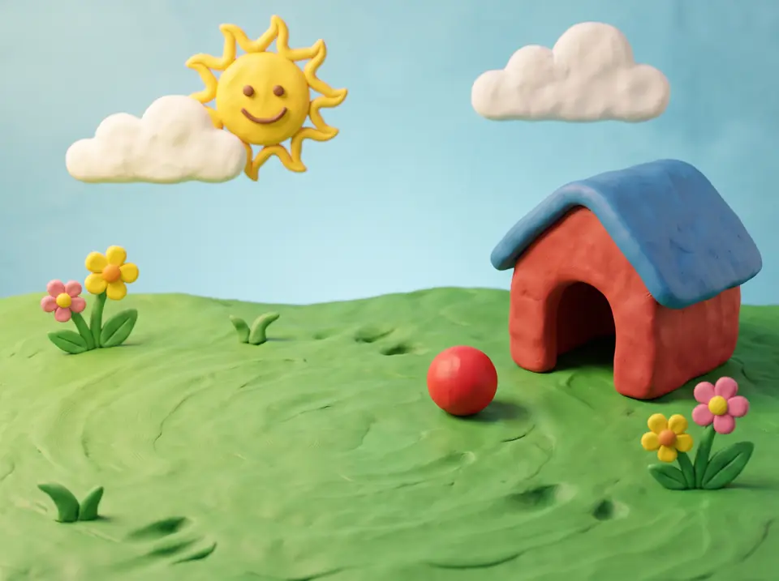
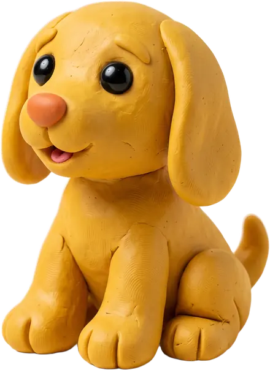
How a pal goes together
Two gentle puzzles, then the word.
The same three beats every time, in the same order, for every animal. Nothing is timed, and a puzzle waits as long as they need.
-
Slide the animal home
The puppy into the sunny backyard, the penguin onto the ice, the octopus into the reef. One big target, generous snapping, no rotation to fight with — and no wrong answers to get.
-
Build it back
The pal splits into three or four big clay pieces, sized for a two-year-old's grip. A wiggle, a satisfying pop, and it's whole again. A piece in the wrong place just springs back.
-
Then it says the word
The finished pal says its own name out loud. The letters are named one at a time on a little clay card, then the whole word again. A few seconds of print — never a quiz, and a parent can switch it off in one tap.
What's not in it
It's the quiet one.
No ads, no scores, no streaks, nothing collected — and after one purchase it never asks you for anything again.
- No ads
- No scores
- No streaks
- No timers
- No notifications
- No accounts
- No microphone
- No data collected
- No links out of the app
- No way to lose
It respects your room
Flip the hardware mute switch and ClayPals goes silent. Start a podcast and it plays politely underneath instead of taking over your audio. The background music is quiet by default and switches off in one tap.
The same four seconds, every time
Every celebration is one continuous four-second clip — no cuts, no music sting, no flashing. The same gentle moment for that animal, however many times it is finished.
Nothing leaves the device
No analytics, no tracking, no accounts, no microphone and no speech recognition — ClayPals never listens. It plays fully in airplane mode. Apple privacy label: Data Not Collected.
Big pieces for little fingers. No time limits, no wrong answers, nothing to fall behind on — a puzzle waits as long as they need.
The roster
Twenty-three pals, twenty-three little worlds.
Farm, pond, savanna, ocean, night forest, coral reef. The dog, the duck and the cow are free forever.
-
FreeDog
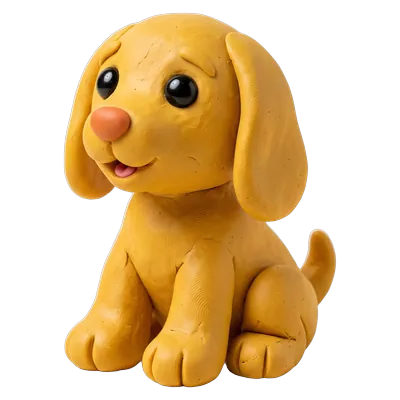
-
FreeDuck
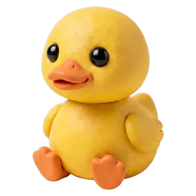
-
FreeCow
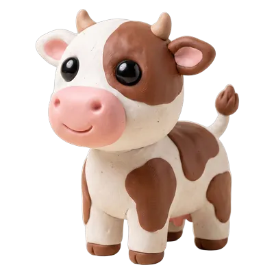
-
Lion
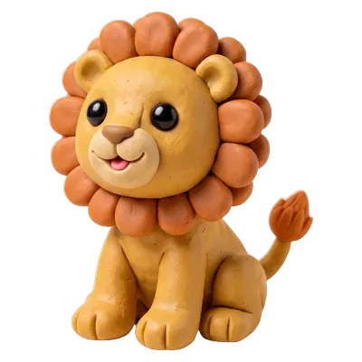
-
Elephant
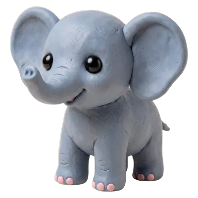
-
Penguin
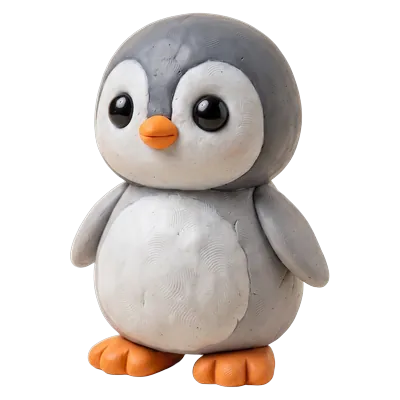
-
Octopus
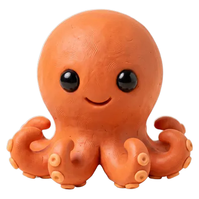
-
Owl
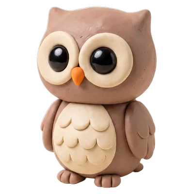
-
Bunny
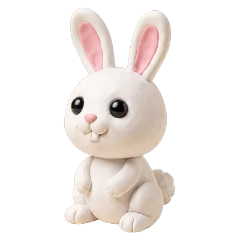
-
Bear
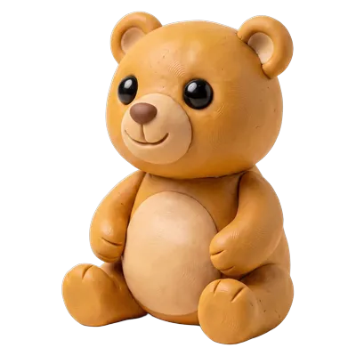
-
Frog
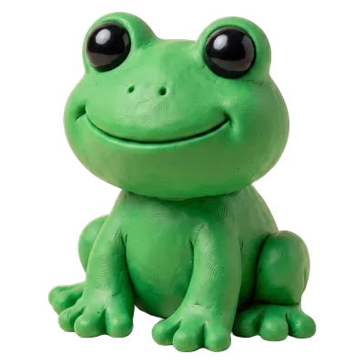
-
Turtle
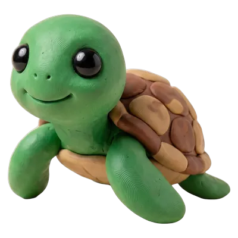
-
Giraffe
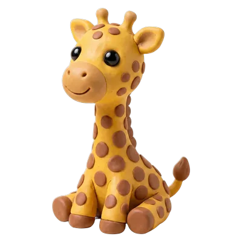
-
Monkey
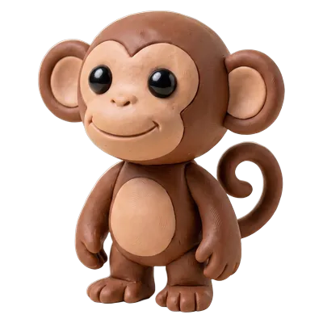
-
Whale
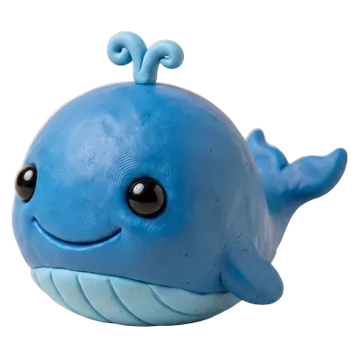
-
Butterfly
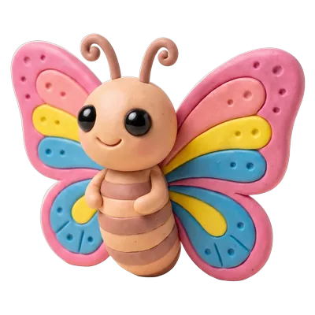
-
Sheep
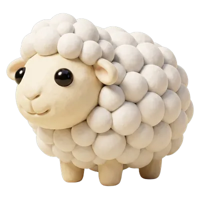
-
Dinosaur
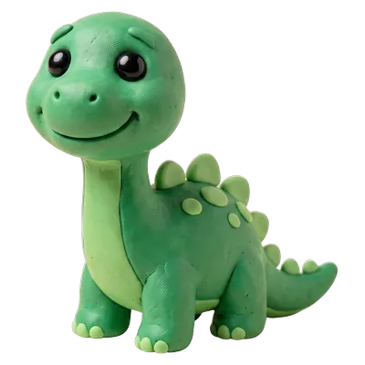
-
Crab
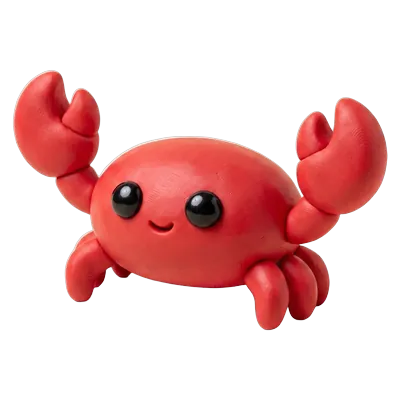
-
Flamingo
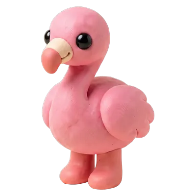
-
Snail
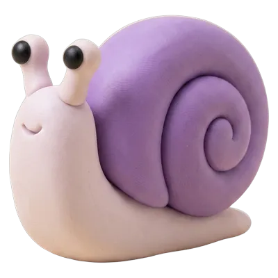
-
Kangaroo
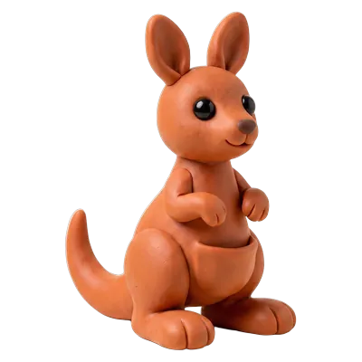
-
Peacock
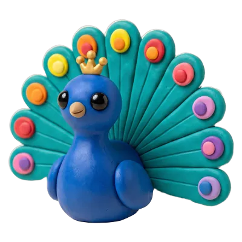
The whole business model
What's free, and what isn't.
-
Free
Dog, duck and cow
Yours forever. Two full puzzles each, the word moment, every sound — no time limit and no ads.
-
$4.99 once
The other twenty animals
One optional in-app purchase. Not a subscription, not coins, not a bundle — there is nothing else to buy, ever.
The purchase sits behind a parental gate a grown-up has to hold for three seconds, and Family Sharing and Ask to Buy work as you would expect. ClayPals is free to download, and the three free pals stay free whether you buy or not.
Twenty-three pals are waiting.
Download free on the App Store
Requires iOS 17 or later. iPhone and iPad. Works completely offline — airplanes, waiting rooms, grandma's house.